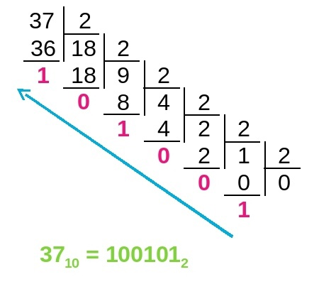

Задачи по массивам. Уровень 2
Задача 1. Минимальный и максимальный элемент:
Дан массив из N целых чисел, нужно посчитать сумму между минимальным и максимальным элементами массива (мин. и макс. элементы не включительно). Гарантируется,
что минимальный и максимальный элемент только один.
Входные данные:
Первая строка содержит одно целое число N (2 ≤ N ≤ 1000) - количество элементов массива.
Вторая строка содержит N целых чисел ai (0 ≤ ai ≤ 10^9), разделенных пробелами — элементы массива.
Выходные данные:
Вывести сумму между минимальным и максимальным элементами массива.
Пример:
| Ввод | Вывод |
| 8 12 7 4 9 5 15 8 13 |
14 |
Пример на Си:
1
2
3
4
5
6
7
8
9
10
11
12
13
14
15
16
17
18
19
20
21
22
23
24
25
26
27
28
29
30
31
32
#define _CRT_SECURE_NO_WARNINGS #include<stdio.h> #include<stdlib.h> int main() { int A[1000], N, i, ind_min, ind_max, sum; scanf("%i", &N); for (i = 0; i < N; i++) { scanf("%i", &A[i]); } ind_max = ind_min = 0; for (i = 1; i < N; i++) { if (A[ind_max] < A[i]) { ind_max = i; } if (A[ind_min] > A[i]) { ind_min = i; } } sum = 0; if (ind_max > ind_min) { for (i = ind_min + 1; i < ind_max; i++) { sum = sum + A[i]; } } else { for (i = ind_max + 1; i < ind_min; i++) { sum = sum + A[i]; } } printf("%i", sum); return 0; }
Задача 2. Простые числа:
Дан массив из N целых чисел. Найдите количество простых чисел в массиве. Посторайтесь максимально оптимизировать поиск простых чисел.
Входные данные:
Первая строка содержит одно целое число N (1 ≤ N ≤ 100) - количество элементов массива.
Вторая строка содержит N целых чисел ai (2 ≤ ai ≤ 10^6), разделенных пробелами — элементы массива.
Выходные данные:
Вывести количество простых чисел.
Пример:
| Ввод | Вывод |
| 10 54 3 978 19 66 24 131 89 12 991 |
5 |
| 3 12 2 3 |
2 |
Мы знаем, что у простого числа только два делителя: единица и само это число. Чтобы понять, что число не простое нам нужно проверить есть ли у этого числа другие делители, но эта процедура очень долгая. Чтобы ускорить данный процесс, нам нужно искать делители от 2 до корня этого числа включительно. Так как если число не простое, то оно имеет как минимум два множителя, которые должны быть меньше либо равны корня из исходного числа, иначе их произведение было бы больше этого числа, поэтому нет смысла перебирать делители больше корня.
Пример на Си:
1
2
3
4
5
6
7
8
9
10
11
12
13
14
15
16
17
18
19
20
21
22
23
24
25
26
27
28
#define _CRT_SECURE_NO_WARNINGS #include<stdio.h> #include<stdlib.h> #include<math.h> int main() { int N, A[100], i, j, ans, flag; scanf("%i", &N); for (i = 0; i < N; i++) { scanf("%i", &A[i]); } ans = 0; for (i = 0; i < N; i++) { if (A[i] != 1) { flag = 0; for (j = 2; j <= sqrt(A[i]); j++) { if (A[i] % j == 0) { flag = 1; break; } } if (flag == 0) { ans++; } } } printf("%i", ans); return 0; }
Задача 3. Перевод числа:
Дан массив из N целых чисел в 10-ой системе счисления. Найдите количество элементов, у которых ровно два нуля в 2-ой сисетме счисления.
Входные данные:
Первая строка содержит одно целое число N (1 ≤ N ≤ 1000) - количество элементов массива.
Вторая строка содержит N целых чисел ai (1 ≤ ai ≤ 10^9), разделенных пробелами — элементы массива.
Выходные данные:
Вывести количество элементов, у которых ровна два нуля в 2 с/с.
Пример:
| Ввод | Вывод |
| 7 53 105 11 12 63486 27 246 |
4 |
Пояснение к примеру
5310 = 1101012
1210 = 11002
6348610 = 11110111111111102
24610 = 111101102
Для решения нам нужно вспомнить как мы обычно переводим число из 10 с/с в 2 с/с.

Пример на Си:
1
2
3
4
5
6
7
8
9
10
11
12
13
14
15
16
17
18
19
20
21
22
23
24
25
26
27
28
29
#define _CRT_SECURE_NO_WARNINGS #include<stdio.h> #include<stdlib.h> int main() { int N, A[1000], i, ans, R, k; scanf("%i", &N); for (i = 0; i < N; i++) { scanf("%i", &A[i]); } ans = 0; for (i = 0; i < N; i++) { k = 0; while (A[i] > 0) { R = A[i] % 2; // считаем остаток от деления на 2 if (R == 0) { k++; } if (k > 2) { // нам нет смысла продолжать дальше, так как k уже больше 2 break; } A[i] = A[i] / 2; } if (k == 2) { ans++; } } printf("%i", ans); return 0; }
Задача 4. Удаление числа:
Дан массив из N целых чисел. Нужно удалить элементы массива, у которых более одного нуля в записи числа.
Входные данные:
Первая строка содержит одно целое число N (1 ≤ N ≤ 1000) - количество элементов массива.
Вторая строка содержит N целых чисел ai (1 ≤ ai ≤ 10^9), разделенных
пробелами — элементы массива.
Выходные данные:
Вывести размер получившегося массива и на следующей строке сам массив.
Пример:
| Ввод | Вывод |
| 8 56402 20203 132 2012 208 1010 32 307310 |
5 56402 132 2012 208 32 |
Задача 5. Вася и цепочки:
Вася любит из чисел составляь цепочки. Число ai попадает в цепочку, если последняя цифра числа
ai - 1
совпадает с первой цифрой числа ai. Естественно у первого числа в цепочки нет такого правила. У Васи есть N целых чисел, помогите
ему найти самую длинную цепочку. Гарантируется, что есть цепочка хотя бы из 2 чисел.
Числа 62, 24, 475 являются цепочкой, а 82 45 315 нет.
Входные данные:
Первая строка содержит одно целое число N (2 ≤ N ≤ 10^5) - количество элементов массива.
Вторая строка содержит N целых чисел ai (1 ≤ ai ≤ 10^9), разделенных пробелами — элементы массива.
Выходные данные:
Вывести длинну самой большой цепочки.
Пример:
| Ввод | Вывод |
| 10 12 201 1 82 4 48 85 53 35 6 |
5 |
Пояснение к примеру
12, 201, 1 - перавя цепочка;
4, 48, 85, 53, 35 - вторая цепочка.
Задача 6. Магические числа:
Миша может превратить обычное число в "магическое". Превращение заключается в том, что число в 10 системе счисления нужно перевести в 2 с/с и
сделать два циклических сдвига вправо, а потом получившееся число перевести обратно в 10 с/с, естественно ведущие нули не учитывать. Миша легко справляется
с парой таких превращений, но каждый человек, которого встречает Миша, хочет, чтобы он превратил и его число в магическое. Помогите Мише справиться со всеми N
людьми, которых он встречает.
Входные данные:
Первая строка содержит одно целое число N (1 ≤ N ≤ 1000) - количество людей.
Вторая строка содержит N целых чисел ai (1 ≤ ai ≤ 10^9), разделенных пробелами — числа, которые дают Мише люди.
Выходные данные:
Вывести для каждого человека его магическое число.
Пример:
| Ввод | Вывод |
| 4 259 12 2635 871 |
448 3 3730 985 |
Пояснение к примеру 1
25910 = 100 000 0112
Первый сдвиг: 100 000 011 --> 110 000 001
Второй сдвиг: 110 000 001 --> 111 000 000
111 000 0002 = 44810
Задача 7. Саша и Маша:
В городе живут Саша и Маша. Саша любит числа, у которых в двоичной системе счисления строго больше нулей, чем единиц. Маша же во
всем хочет противоречить Саше, поэтому все числа, которые не нравятся Саше, нравятся Маше. Ребята играют в игру: у них есть N карточек
с числами, каждый из них выбирает карточки, которые им нравятся. Выигрывает тот, у кого карточек больше. Гарантируется, что есть победитель.
Входные данные:
Первая строка содержит одно целое число N (1 ≤ N ≤ 1000) - количество элементов массива.
Вторая строка содержит N целых чисел ai (1 ≤ ai ≤ 10^9), разделенных пробелами — элементы массива.
Выходные данные:
В превой строке вывести имя победителя (Sasha или Masha);
Во второй строке вывести числа, которые любит победитель;
В третьей строке вывести числа, которые любит проигравший.
Пример:
| Ввод | Вывод |
| 7 17 3 25 24 6 84 10 |
Masha 3 25 6 10 17 24 84 |
| 12 69 76 37 1872 12 788 418 203 117 4 108 450 |
Sasha 69 76 1872 788 418 4 450 37 12 203 117 108 |
Пояснение к примеру 1
Masha:
310 = 112;
2510 = 110012;
610 = 1102;
1010 = 10102.
Sasha:
1710 = 100012;
2410 = 110002;
8410 = 10101002;
Так как у Маши на одну карточку больше, то она побеждает.
Задача 8. Трудные дела:
У Никиты за месяц накопились дела. У каждого дела есть свой уровень сложности его выполнения. Никите нужно выполнить как можно больше дел, при этом их общая сумма сложностей не
должна быть больше чем M. Вы должны выводить номер дела, которое должно быть сделано, чтобы условие выше было выполнено. В итоге вы выведите список номеров дел по возрастанию,
которые нужно выполнить Никите для лучшего исхода. Если ответа нет, выведите -1. Если ответов несколько, то выведите любой из них.
Входные данные:
Первая строка содержит два целых числа N (1 ≤ N ≤ 10^4) и M (1 ≤ M ≤ 10^4) - количество дел и макс. сумма сложностей соответственно.
Вторая строка содержит N целых чисел ai (1 ≤ ai ≤ 10^9), разделенных пробелами — сложность дела номер i.
Выходные данные:
Если ответ есть, то выведите номера дел через пробел, иначе -1. Нумерация начинается с 1.
Пример:
| Ввод | Вывод |
| 6 15 8 3 6 12 4 9 |
2 3 5 |
| 7 86 14 40 15 14 2 36 6 |
1 3 4 5 7 |
Пояснение к примеру 2
В этом примере допустимы еще несколько ответов, например 2 3 4 5 7. Сумма сложностей будет 77, что меньше 86.
Code.C
© Copyright Павел Калашников 2021
обратная связь code.c@mail.ru